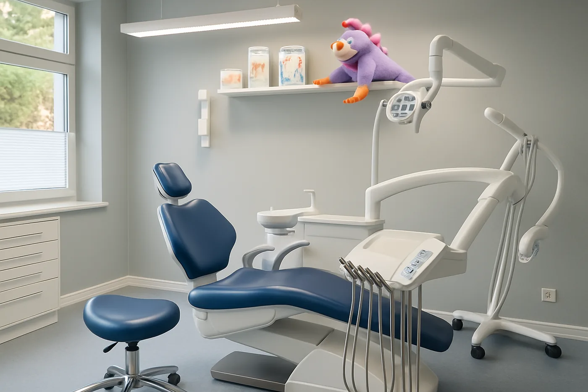

Zahnmedizin mit Zeit und Vertrauen
Ein gutes Gefühl.
Ein gesundes
Lächeln.
Willkommen bei Andrea und Oliver Brix.
Ihre Zahnarztpraxis für die ganze Familie –
mitten in Haldensleben.
Andrea & Oliver BrixÜber 35 Jahre Erfahrung. Persönlich für Sie da.

EINBLICKE IN UNSERE PRAXISUnsere Sprechzeiten
Mo–Mi 08–12 & 14–18 Uhr
Do–Fr 08–12 Uhr
Für Ihre Zahngesundheit
Gut versorgt.
In jedem Lebensabschnitt.
Von der ersten Vorsorge bis zum passenden Zahnersatz: Wir finden gemeinsam die Behandlung, die zu Ihnen passt.
Prophylaxe & Prävention
Vorsorgen, reinigen, erhalten. Wir begleiten Ihre Zahngesundheit – in jedem Alter.
Mehr erfahrenZahnerhaltung
Individuelle Füllungen und sorgfältige Behandlung für Ihre natürlichen Zähne.
Mehr erfahrenZahnersatz
Von Kronen bis Prothesen: gemeinsam die passende Versorgung finden.
Mehr erfahren
Die Menschen hinter Ihrem Lächeln
Erfahrung, die bleibt.
Nähe, die gut tut.
Wir sind Andrea und Oliver Brix. Seit über 35 Jahren begleiten wir Menschen auf ihrem Weg zu gesunden Zähnen – mit Erfahrung, Sorgfalt und einem offenen Ohr.
Gemeinsam mit unserem Praxisteam möchten wir, dass Sie sich bei uns gut aufgehoben fühlen.
Andrea & Oliver Brix
Ein kleiner Einblick
Schon vor Ihrem
Besuch ankommen.
Helle Räume, vertraute Gesichter und eine persönliche Atmosphäre. Lernen Sie unsere Praxis im Dammühlenweg kennen.
Wir freuen uns auf Sie
Ihr nächster Schritt?
Ein gutes Gespräch.
Vereinbaren Sie Ihren Termin ganz einfach telefonisch.